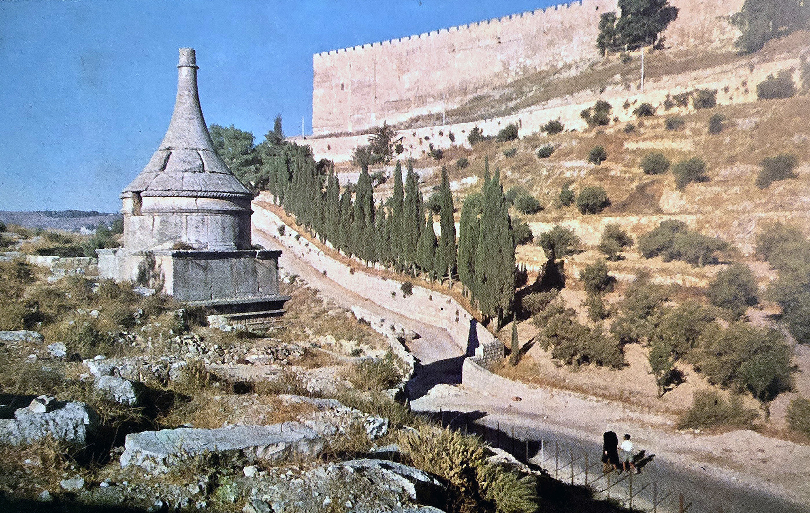

Kidron Valley Tombs

- Find Name
- Kidron Valley Tombs
- Historical Period
- Second Temple period
- Artifact Date
- 2nd century BC–1st century AD (tombs)
- Date Discovered
- Standing monuments (Benei Hezir inscription studied from the 19th century)
- Discovery Location
- Kidron Valley, Jerusalem, Israel
- Current Location
- In situ, Kidron Valley, Jerusalem
- Timeline Era
- Return and Second Temple
- Description
- The monumental rock-cut tombs lining the Kidron Valley below Jerusalem's walls, including the tomb of the priestly Benei Hezir family, named by a genuine 2nd-century BC inscription. The most famous monument, popularly called 'Absalom's Pillar,' is not Absalom's tomb: it dates to the 1st century AD, a thousand years after Absalom, and the entry corrects that popular attribution rather than repeating it.
- Biblical Significance
- The Kidron tombs are Second Temple Jerusalem's city of the dead, cut into the valley Jesus crossed to Gethsemane. They remind readers that the Jerusalem of the Gospels was ringed by the graves of priests and families who waited, like everyone, for resurrection — and that pious labels on old stones are not always true.
- Evidence Class
- Contextual
- Interpretations
- Scholars agree the Benei Hezir tomb is a 2nd-century BC priestly tomb by its inscription; the 'Absalom's Pillar' name is a later tradition refuted by the monument's 1st-century AD date.
- Related Places
Awaiting Review Not yet checked against scholarly sources. Treat its claims as provisional until this entry is reviewed. About verification
Last reviewed: not yet reviewed